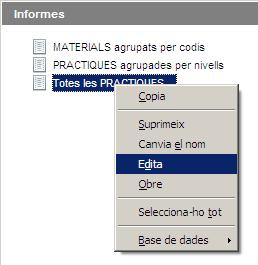
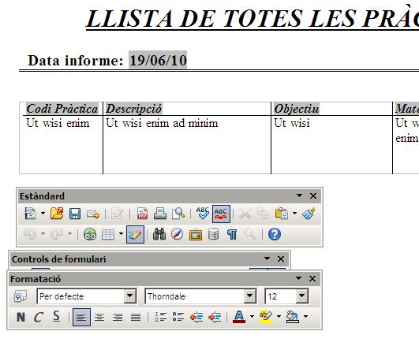
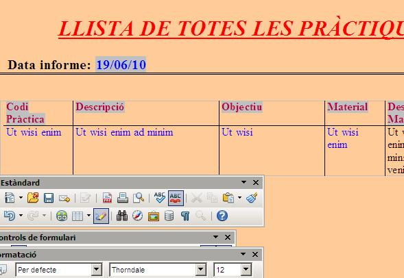
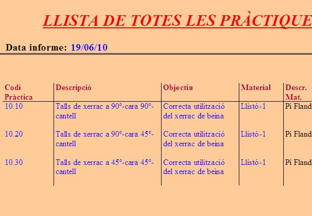

En el cas dels informes el programa Open Office Base
no ens permet crear-los en blanc i anar-lo farcint com passava amb els
formularis. En aquest cas ens veiem obligats a partir sempre de
l'assistent per procedir a la seva creació.
Per tant, aquí el que es demana és aprendre a modificar-ne un
dels que ja estan creats mitjançant l'accés al mode edició de
l'informe.
Per poder modificar un informe prèviament ja fet, haurem
d'accedir des de la finestra principal del programa i amb el botó
secundari del ratolí a sobre del nom de l'informe, triarem l'opció
Edita, tal com mostra aquesta imatge:

Un cop dins de l'edició de l'informe, veiem que podem modificar
la majoria del seu contingut. Aquesta imatge presenta un informe tal
com ens l'ha deixat l'assistent:

I aquesta altra imatge presenta unes quantes modificacions fetes sobre el mateix informe:

I si l'executem, el resultat final es veurà així:

Ara es tracta que sobre els informes fets amb anterioritat siguis
capaç de fer-ne unes quantes modificacions tal com s'explica en aquesta
darrera pràctica del curs.

|
|

|
|